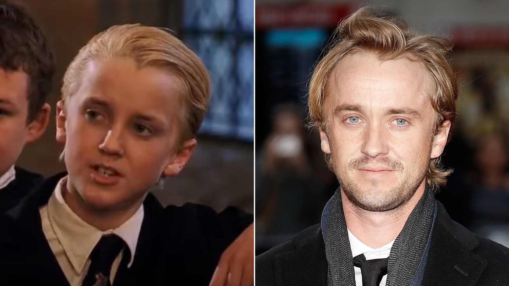

Actores Importantes
La saga de Harry Potter es conocida no solo por su fascinante
mundo mágico, sino también por el increíble elenco de actores que dieron
vida a los personajes más emblemáticos de la historia.
Desde los tres jóvenes protagonistas hasta los adultos que interpretaron
a los profesores y villanos, cada miembro del reparto aportó algo único
a la historia.
A continuación, conoceremos más acerca de los actores que hicieron
posible esta maravillosa franquicia.
El Reparto de Harry Potter
Daniel Radcliffe como Harry Potter

Daniel Radcliffe fue elegido para interpretar al joven mago Harry Potter cuando tenía solo 11 años, y su actuación lo convirtió en uno de los actores más conocidos de la historia del cine. A lo largo de las ocho películas, Radcliffe creció con el personaje, mostrando la evolución de Harry desde un niño inseguro hasta un héroe decidido.
Rupert Grint como Ron Weasley
Rupert Grint interpretó a Ron Weasley, el leal y valiente mejor amigo de Harry. Ron es un personaje cómico y entrañable, y Grint le dio vida con gran autenticidad, aportando humor y calidez a la saga.
Emma Watson como Hermione Granger
Emma Watson, quien interpretó a Hermione Granger, se convirtió en una de las actrices más exitosas de la saga. Hermione, la inteligente, valiente y algo perfeccionista amiga de Harry, es uno de los personajes más admirados y queridos por los fans.
Tom Felton como Draco Malfoy
Tom Felton interpretó a Draco Malfoy, el antagonista de los tres protagonistas. Draco es hijo de una familia purista que desconfía de los muggles, y a lo largo de las películas, Felton mostró cómo el personaje va evolucionando, mostrando su lucha interna entre el bien y el mal.
Alan Rickman como Severus Snape
Alan Rickman interpretó al complejo y misterioso Severus Snape, uno de los personajes más profundos de la saga. Su desempeño es uno de los más recordados y aclamados de toda la serie.
Maggie Smith como Minerva McGonagall
Maggie Smith interpretó a la estricta pero querida profesora de Transfiguración, Minerva McGonagall. Su papel como protectora de los estudiantes de Hogwarts fue fundamental a lo largo de las películas.
Richard Harris y Michael Gambon como Albus Dumbledore

Richard Harris interpretó al querido director de Hogwarts, Albus Dumbledore, en las primeras dos películas. Tras su fallecimiento, Michael Gambon asumió el papel en las siguientes entregas.
Ralph Fiennes como Lord Voldemort
Ralph Fiennes interpretó al temido y poderoso mago oscuro Lord Voldemort, el principal antagonista de la saga. Fiennes aportó una presencia escalofriante y villanesca al personaje.
Helena Bonham Carter como Bellatrix Lestrange
Helena Bonham Carter interpretó a Bellatrix Lestrange, una de las seguidoras más fanáticas y aterradoras de Voldemort. Con su interpretación, Carter ofreció una performance visceral y perturbadora.
Gary Oldman como Sirius Black

Gary Oldman asumió el papel de Sirius Black, el padrino de Harry, un personaje complejo y muy querido, aportando una gran intensidad emocional a la historia.
El reparto de Harry Potter fue clave para dar vida a este mágico universo. Cada actor aportó su talento y carisma, logrando que millones de fans se conectaran con los personajes y crecieran junto a ellos a lo largo de las películas. Su legado sigue vivo en la historia del cine y en el corazón de los seguidores.